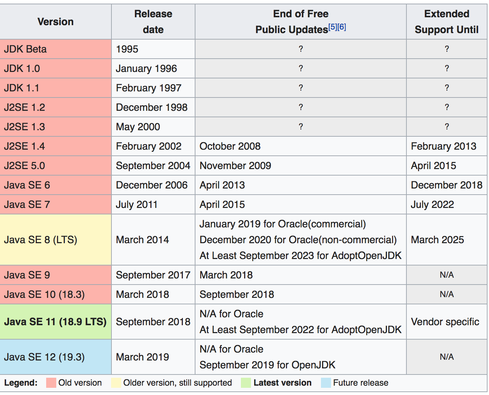

Java Introduction
Java: Object-Oriented Programming, Write-Once-Run-Anywhere
.java code -> (javac) -> .class bytecode -> (java) -> JVM run
Born in 1995, James Gosling, Sun Microsystems
JDK (Java Development Kit): A tool sets include JVM, and programming tools, standard packages.
one feature released every 6 months. (6月一小更）

JIT (Just in Time compilation)
Java code is compiled into bytecode, and the bytecode is interperted by JVM. It is slower than running machine code directly in a CPU. So JIT comes in. JIT will compile the most frequently used bytecode (-XX:CompileThreshold=5 set the frequency to 5) and compile it to machine code.
The name of Java JIT is HotSpot, JIT is part of the JVM
Granularity of JIT is in function level.
java -client -Xbatch -XX:+PrintCompilation ClassName
#print the info if JIT is involved.
#-client: make sure to run in client mode.
#-XX:+PrintComiplation: print compile info
#-Xbatch: make output serially, not concurrently. In other words, JIT compilation will block the program execution.
- JDK1.1: Inner class, limited reflection, JavaBean, rmi, JDBC
- J2SE 1.2: strictfp, Swing, JIT compiler, collections package
- J2SE 1.3: modified RMI
- J2SE 1.4: exception chain, IPv6, assertion(断言）
- J2SE 5 (2004, 09, 30): generics, annotation, autoboxing, enumeration, for each loop, static import
5 is product version, 1.5 is developer version - J2SE 6:
- J2SE 7: lambda expression
- J2SE 8 (2014, 03, 18)
- J2SE 9: AOT (ahead-of-time compilation); modularity.
- Java SE 10: local var keyword;
- Java SE 11: the current long term support Java.
Java EE
- Java SE is for small scale development, e.g. a desktop application. Java EE is for server-side large scale programming, which defines more standard (Interface) e.g. servlet
- JSR-369 (Java Specification Requests, A Java Community Process) defines the standard of Servlet container and Servlet. Including lifecycle, common APIs.
Java Language Specification
Java language specification is a standard. It can have multiple implementations, e.g. Oracle JRE (HotSpot), JDK and OpenJDK.